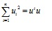
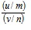
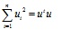

La distribucion F es continua, no puede ser negativa, tiene sesgo positivo y su curva se aproxima al eje x cuando aumentan los valores en el dominio (Guerra et. al., 2004).
Segun Gijaba, (2009), si u y v son variables aleatorias independientes que siguen una distribucion chi-cuadrado de n x n
y 
grados de libertad respectivamente,
entonces

sigue una distribucion F de Fisher
de
n x n grados de libertad en el numerador y

grados de libertad en el denominador.